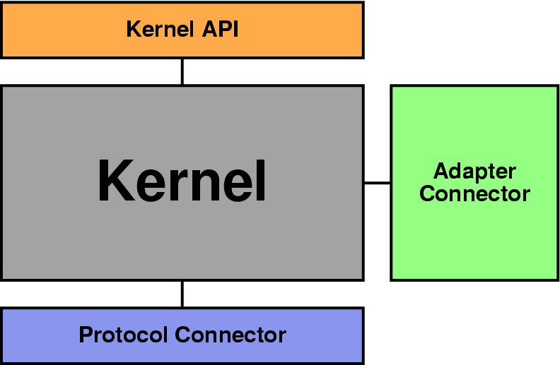

Table of Contents
This document provides information required to use OpenORB. It describes how to install, configure and use OpenORB. It also explains how to use the IDL compiler and the Naming service.
For any comments or questions about this documentation and OpenORB, please send email to The Community OpenORB mailing list <openorb-devel@lists.sourceforge.net>.
This document is the first version of the OpenORB Programmers Guide. It will be completed step by step. Contributions would be greatly appreciated.
Table of Contents
OpenORB is a CORBA Object Request Broker fully developed in Java. It fully complies with the CORBA 2.4.2 specification and provides many features, services and extensions.
OpenORB has been designed to provide a reliable foundation for distributed applications. It combines all CORBA features with implementation specific extensions, with the aim of being the most powerful and complete CORBA implementation in Java.
OpenORB is the successor of JavaORB which is already widely used all over the world: in Europe, America, China, Australia, and other places. A large number of deployed applications, research projects, and study projects are using JavaORB. Building on their experience with JavaORB, the OpenORB team has defined a complete new architecture to ensure that OpenORB is the best solution for applications needing high scalability and high performance.
CORBA technology is becoming increasingly complex, and its feature set is growing. Many users don't require all features to be present in every ORB deployment. OpenORB is the most complete CORBA implementation but not the biggest! Why? Because OpenORB can be configured to fit only the user's requirements. OpenORB is not monolithic middleware, it is a truly modular ORB.
That means that users can define what mechanisms are needed by their applications, so that OpenORB will be loaded with only those mechanisms. OpenORB contains a kernel that has the ability to load only required parts during bootstrap time.
Thus, OpenORB is the best way to have the best implementation, the most complete solution and the most flexible platform!
The current implementation of OpenORB has the following features:
Fully compliant with CORBA 2.4.2
Fully developed in Java
Fully multithreaded ORB
Compliant with JDK 1.2 and 1.3
Truly modular ORB
XML Configuration file
Multiple Object Adapters: BOA and POA
IIOP 1.2, Bidirectional GIOP
Portable Interceptors
Interoperable Naming Service
DynAny, DII, DSI
Code set support
Reusable IDL compiler
Several tools: IDL to HTML, IDL to RTF
To develop OpenORB, we user feedback into account. From the user's point of view, CORBA is usually too complex to configure, and the applications developed with CORBA are too complex to deploy and to maintain. From the project manager's point of view, CORBA provides too heavy a platform for the real needs; does not include a way to plug in specific IT requirements; and is usually too expensive.
OpenORB has been designed to be a modular ORB. It means that OpenORB can be customized to fit applications' requirements.
Within the configuration file, the user specifies a complete OpenORB configuration that lists all the required parts. There are two real advantages of such an approach, the ORB only contains the required features, it means that it is lighter and faster.
For example, it's possible to disable DynAny management.
An ORB part can be replaced by another one. Thanks to this architecture, it's possible to develop specific parts to fulfill application requirements.
For example, it's possible to replace the communication protocol by another one. Currently, only the IIOP (GIOP) protocol is available. In the same way, the object adapter can be replaced and several object adapters can be used at the same time.
The OpenORB kernel is responsible for starting the ORB and applying the current configuration. That means:
loading all the ORB parts
setting the values for the customizable features
The kernel is itself divided into 2 parts:
the bootstrap system (ORBLoader): this part is the bootstrap class. This class is invoked by the ORB class to initialize the ORB. (This class could be replaced by a user class. The default implementation of this class is OpenORBLoader).
the ORB connector: this part is responsible for loading all ORB parts. (This class could also be replaced by a new one. By default, the OpenORBConnector is used.)
The following picture provides an overview of the kernel architecture:
The Kernel API can be used by the other parts OpenORB. It gives access to all the other parts of the ORB (through a repository of loaded parts) and gives access to the configuration file.
This connecter provides a set of APIs to develop object adapters. At this time, OpenORB contains three different object adapters:
the Portable Object Adapter: a complete implementation of the specification
the Basic Object Adapter: a complete implementation of the old specification
the Forward Adapter: a adapter used by another to register forwarded objects.
Several connector instances can be used at the same time. For example, it is possible to use BOA and POA in the same application.
The communication protocol connector provides a way to define a communication protocol for OpenORB. It includes:
a marshalling / unmarshalling engine
a client side API
a server side API
The communication protocol could be easily extended or replaced by another protocol. For example, the OpenORB SSL extension is extending the current IIOP implementation.
It's possible to have several instances of this connector in the same application, in that case several communication protocols could be used at the same time.
OpenORB is configured through an XML file. This file enumerates properties that list all features to use and parameters to set.
The configuration file is composed of:
properties: name value pairs
modules: sets of related properties
profiles: complete configurations
A default configuration file is directly embedded in the OpenORB jar file. Hence OpenORB can be used without any additional configuration.
If the user requires specification configuration, he has to extend the default configuration by either defining a new configuration file ( this new file could replace the default one ) or extending the existing one.
All the OpenORB services will soon embed their own default configuration. In addition, it will be soon possible to replace the default configuration file by its own file ( thanks to the build process ).
So, an application deployment will be soon very easy to do with OpenORB since all configuration parameters could be directly included in the Jar files.
OpenORB is provided with a build script for the Ant build tool (see References). This tool is available in the OpenORB distribution (in the lib directory). So, to compile OpenORB, you just have to start the build script corresponding to your Operating System: build.bat for Windows or build.sh for Unix.
The build script provides several targets (to see all targets, just start the build script with the targets or the help option).
The default way is to simply start the build script (without any option).
Follow these steps to build OpenORB:
make sure you have downloaded the tools as well as the OpenORB package. This package can be found on the OpenORB web site, and provides tools used to build OpenORB.
set the JAVA_HOME environment variable (i.e. c:\jdk1.3 or /usr/jdk1.3)
start 'build.bat' (for Windows) or 'sh build.sh' (for Unix)
The first step is to compile OpenORB in order to generate the OpenORB jar files. OpenORB is composed of two jar files:
openorb-X.X.X.jar: this jar file contains all parts of the ORB
openorb_tools-X.X.X.jar: this jar files contains some tools for OpenORB, mainly the IDL compiler
The first jar, openorb-X.X.X.jar, known as the OpenORB core, must be installed on each host that runs a CORBA application. It contains the core OpenORB runtime, including all the client and server side code. OpenORB depends on the XML parser xerces, which is found in the lib directory. This file must be copied to the same directory in which the OpenORB jar resides.
The second jar, openorb_tools-X-X-X.jar, must be installed on development hosts. It is dependent on the OpenORB core, which must be installed in the same directory as the tools jar file.
These jar files must be added to the classpath when running an ORB application in Java. For information on how to do this, please see your JDK documentation. Note that OpenORB jar files may be used as installed extensions (see References).
To run an ORB application using OpenORB it is required to customize your Java platform in order to use OpenORB instead of the default JDK ORB. A file named orb.properties must be created in the lib subdirectory of the directory specified by the Java system property java.home. The location of the java.home directory is dependent on your Java runtime.
The orb.properties file contains the following lines: org.omg.CORBA.ORBClass=org.openorb.CORBA.ORB org.omg.CORBA.ORBSingletonClass=org.openorb.CORBA.ORBSingleton
The two property values are:
org.omg.CORBA.ORBClass identifies the class name for the ORB class.
org.omg.CORBA.ORBSingletonClass identifies the class name for the ORB singleton class.
The simplest way to create the orb.properties file is to run the OpenORB installer, using the following command: java -jar openorb-X.X.X.jar
The java.home directory is the root directory of your jdk/jre installation, you would find the java executable in the bin subdirectory. To determine the directory to place orb.properties compile and execute the following program.
public class ShowMe
{
public static void main( String [] args ) {
System.out.println("You have to put your 'ORB.properties' in: ");
System.out.println( System.getProperty("java.home")
+ java.io.File.separator + "lib" );
}
}
At this point, OpenORB is ready to be used. For many users there is no need to further configure the ORB.
Table of Contents
The OpenORB jar files contain a configuration file. This configuration file, named OpenORB.xml provides all default features to use OpenORB. If you browse the content of the OpenORB jar file, you will find OpenORB.xml in the org/openorb/config subdirectory.
This configuration file imports another configuration file named default.xml. This file contains descriptions and reasonable default for all properties used to manage the OpenORB behavior.
When an OpenORB user develops an application or deploys on a certain site, it may be necessary to customize OpenORB.xml in order to specify some property values. After customization, the configuration file can be included in the OpenORB jar file. This allows simplified deployment for the CORBA applications.
A following chapter explains more in depth how to use and to customize the OpenORB behavior through the configuration files. The OpenORB.xml file gives several examples for configuration.
The default.xml file is also available in the org/openorb/config subdirectory. This file is the definitive reference on which items can be configured. It describes all available configuration items and sets sensible defaults for them. This file should be used as documentation for the configurable items.
If you are using OpenORB for the first time, we advise you to stop your reading at this point. Try out OpenORB by starting examples and developing some test applications. Come back to this point to continue your reading and to understand more in details about OpenORB configuration.
This chapter describes the configuration mechanism of OpenORB, it explains how configuration works, not what is configured.
OpenORB is configured through a set of XML documents. These documents have their form described in a DTD, which is contained in the OpenORB jar file in the location org/openorb/config/OpenORB.dtd.
The configuration file loaded first by OpenORB is known as the master configuration file. This master file may reference other configuration files, which may in turn reference other configuration files. This feature allows fast installation of extensions to OpenORB, and the ability to centrally define an OpenORB configuration across an organization. The master configuration file can be stored in a range of locations. The configuration file used is the first one found in the following list:
The value of the OpenORB property config in the openorb module. This property can be set using the command line or using Java properties. For details see "Bootstrapping OpenORB" below.
OpenORB.xml in the directory located from the Java system property, user.dir. This is typically the working directory which the application is started in.
The directory located from the Java system property user.home is searched next for a file named OpenORB.xml or .OpenORB.xml. The user.home directory is the home directory of the current user. This location is system dependent.
OpenORB.xml in the directory located from the Java java.home system property
Finally the subdirectory config is searched from the location obtained from the OpenORB property openorb.home for the OpenORB.xml file.
The last of these locations deserves further explanation. The usual setting of the OpenORB property openorb.home is within the OpenORB jar file. As this property is usually left as the default, the file named org/openorb/config/OpenORB.xml acts as a default master configuration file for OpenORB. So if you don't copy the OpenORB.xml file to the user.dir, user.home or java.home directories, OpenORB will use the embedded configuration file.
This system is very powerful because OpenORB is able to directly embed its own configuration. If you need to customize OpenORB, you have to edit the OpenORB.xml file to apply your changes and place it in one of the locations mentioned above. The OpenORB.xml file is available in the src/config directory of the OpenORB source code and in the config directory for the prebuilt OpenORB versions.
After customization of the OpenORB.xml file, it's possible to replace the embedded OpenORB.xml file with the new one. It means that your configuration will be directly in the OpenORB jar file. This is very convenient and useful if you need to deploy an application that uses OpenORB, since all specific requirements for the OpenORB configuration will be located in the OpenORB jar. So, you will not waste time configuring OpenORB on each machine where your application is deployed.
To replace the embedded configuration by the new one, use the following procedure:
If you are using the OpenORB source code, the Ant build script contains a target named config that does this. Use the build config command in the root directory of the source distribution. Ant will replace the embedded configuration of the OpenORB jar (the jar file must be in the dist directory of the OpenORB distribution) by the OpenORB.xml available in src/config.
If you are using the pre-built version of OpenORB, a script named setConfig is available in the config directory. This script will replace the OpenORB configuration file embedded in the OpenORB jar (this jar file must be in the lib directory of the OpenORB pre-built distribution) by the OpenORB.xml available in config.
The embedded configuration file distributed with OpenORB references the default.xml file found in the config subdirectory of openorb.home for most of its settings, so OpenORB uses the default configuration when it is first installed.
The OpenORB root element. Setting the doctype for an OpenORB configuration file is optional, however some users may prefer to add it when developing a configuration, as it allows validation of the document. When the doctype is used it can be set as follows:
<!DOCTYPE OpenORB PUBLIC "-//openorb.sf.net//OpenORB Config//EN" "http://openorb.sf.net/config/OpenORB.dtd">
The non-public identifier will never be used by the OpenORB configuration mechanism, so can be set to any URL that the user has installed the DTD for their own validation. The URL shown above will also be valid.
The OpenORB XML file's root element is named 'OpenORB'. The root element should contain two namespace definitions which are used in the OpenORB configuration file:
<OpenORB xmlns="http://openorb.sf.net/config" xmlns:xlink="http://www.w3.org/1999/xlink" >
The root OpenORB element may contain an optional default profile attribute. This declares which profile is used by default if the file is selected as the master configuration file. Profiles are explained in detail below.
The OpenORB element may also define a base URL for resolving relative URLs used in import statements which are also defined below.
Each individual subsystem of OpenORB, for example the IIOP subsystem or the POA, is controlled by a module defined in a configuration file as an immediate child element of the 'OpenORB' root element. Modules are usually defined only in configuration files which are contained in a jar file. All of the modules affecting the OpenORB core are defined in the default.xml file.
Modules have the following responsibilities:
Define properties affecting the subsystem
Define the subsystem's initializer, a class which is used to set it up
Define the subsystem's dependencies
A property is a name, value pair used in configuring the orb. In the config file the values of properties are always simple strings, however each property usually has an accepted range of legal values which is documented in the module which defines it. When a module defines a property it also defines a default value for it, which is used in the absence of any overrides. Here is a typical property definition:
<module name="one" > <property name="name" value="value"/> </module>
Each module defines a namespace for its property definitions, so if a property is defined in two differently named modules with the same name, then these are distinct properties. Each defined property has an expanded name, which is found by concatenating its defining module, a '.', and the property name. For example the above module would define a property with expanded name one.name. If two modules contained in different files are given the same name then the expanded names of their properties may collide. For this reason it's important to ensure module names are unique. Module and property names are not case sensitive.
A module may also declare property sets, which are sets of related properties. All the properties in a property set have names which are prefixed with the same value. Here is a typical property set definition, with a few properties defined in it:
<propertyset prefix="pfx" /> <property name="pfx.a" value="value1"/> <property name="pfx.b" value="value2"/>
Note that the propertyset element is a sibling of the property definitions, and not a parent, so there is no </propertyset> tag. Some very commonly used properties are given a special alias which can be used on the command line as a shortcut. These are defined in the module as follows:
<propalias name="prop" value="Alias"/>
For details of command line setting of properties, see the section below.
A module may define an initializer, this names a class which is loaded by the orb runtime when the orb is created and is used to initialize the module's subsystem. The initializer class must implement one or both of the portable interceptor ORB initializer interface, org.omg.PortableInterceptor.ORBInitializer, and the OpenORB feature initializer interface, org.openorb.PI.FeatureInitializer. An example of a module with an initializer is the POA module:
<module name="POA" initializer="org.openorb.adapter.poa.POAInitializer" />
Here is a typical module definition for a module which defines some properties and an initializer:
<module name="foo" initializer="org.myorg.foo.FooInitializer"> <property name="size" value="5"/> <property name="length" value="10"/> <propertyset prefix="color" /> <property name="color.white" value="1"/> </module>
Some subsystems require other subsystems be loaded in order that they can be used. This is a dependency. Modules declare their dependencies by using import statements, which are described in the following section.
It is common for a subsystem to require another subsystem be loaded and modified in some way. This is achieved by using import elements. Import elements are defined as children of the module which defines them. They declare the target module for the dependency, and optionally a set of overrides for the module's properties. Here is an example import statement which could be used in a different module defined in the same configuration file as the foo module defined above. It loads the foo module defined and overrides the setting of some of the properties:
<import module="foo" > <property name="length" value="11"/> <property name="color.white" value="0"/> <property name="color.black" value="1"/> </import>
Each module is only ever visited once during configuration. This allows a module to be imported as a dependency of multiple other modules without the property overrides being reset to their default values: If the above import statement were to be run, and then another import of foo occurred in a different location which overrode different properties, then the properties overridden in the above import would remain overridden. However, if the later import overrode some of the same properties as the above import, these properties would be changed.
Imports may also target modules in external files. Typically this is done with modules which are defined in well known, permanent locations, for example the modules defined in the default.xml file. This file is in a well known location: the config subdirectory of the openorb.home directory. The import attribute used to declare imports from an external file is the xlink:href attribute.
The following statement imports the module named 'mod' from the config file obtained from the given URL.
<import xlink:href="http://www.example.com/orb/cfg.xml#mod" />
The target of an href attribute does not have to be an absolute URL, it may be defined relative to the document's base URL. The base URL for the document will either be a href to the document itself, or whatever is set by the xml:base attribute of the root 'OpenORB' element. For example:
<import xlink:href="#mod" /> <import xlink:href="../cfg.xml#mod" />
In addition to the URL protocols normally defined by Java, OpenORB defines an extra URL protocol, the resource protocol. The resource protocol attempts to load its target by using the Java getSystemResource function, allowing things to be loaded off the classpath. For example the following URL would import the 'mod' module from the default config file contained in the openorb jar:
<import xlink:href="resource:/org/openorb/config/default.xml#iiop"/>
An alternative version of the resource protocol uses the getResource function on the Class object named org.openorb.ReleaseInfo to generate the URL for the target. This uses the Class's class loader to load the resource. The following two resource URLs point to the same file as the above URL: (note: these lines have been split to allow them to be typeset, this should not occur in the XML file)
<import xlink:href="resource://org.openorb.ReleaseInfo/config/default.xml#mod" /> <import xlink:href="resource://org.openorb.ReleaseInfo//org/openorb/config/default.xml#mod" />
The references used in import statements are subject to property expansion, any part of the reference enclosed in ${...} is attempted to be expanded. The expanded names of properties from modules which have been defined previously to the import statement will be used first for this property expansion, and if this fails then the expansion will be attempted from Java system properties. In the following example the ${user.name} part of the reference is expanded using the Java system property, which is equal to the name of the current user:
<import xlink:href="http://www.example.org/openorb/${user.name}.xml" />If the property expansion appears at the beginning of the URL and it expands to a property which can be parsed as a URL, then the property's URL is used as a base URL for resolving the argument. If this fails, but the property can be parsed as a file then the file is converted to a URL and again used as the base URL. For example, in the following import statement ${openorb.home} gets expanded into the URL property setting of openorb.home, which is generally "resource:/org/openorb/", and the remainder of the href is resolved relative to it:
<import xlink:href="${openorb.home}config/default.xml#boa" />The final method of importing properties is from a Java properties file. Property file imports have two forms, the first defines the module that the properties in the file override in the URL's fragment. For example, the following import statement would set the properties defined in InitRef.properties in the user's home directory:
<import xlink:href="${user.home}InitRef.properties#InitRef" />The second form of property import does not use fragment identifiers, but assumes that the properties defined in the file use expanded property names. This style of import cannot define property overrides as sub elements, as there is no module to define the properties within. For example:
<import xlink:href="${user.home}extra.properties" />Profiles are a useful way of grouping related modules together. Whenever an ORB application is loaded a profile is used to collect the required orb subsystems.
Profiles are very useful to define several ORB configurations and to select the configuration to use when starting an application. For example, if you download OpenORB services or extensions, a profile is very useful to collect specific OpenORB services configuration parameters. For example, you could define a transactional profile when using applications with transactions, or a database profile for use with the persistent state service.
Profiles act like modules that contain only import statements; They may override properties defined in modules that they import, but they do not define a namespace for properties, and so do not have 'property', 'propertyset', or 'propalias' child elements. Profiles also cannot define initalizers as they don't correspond to an orb subsystem.
Here is an example profile:
<profile name="large"> <import module="chips"/> <import module="sauce"> <property name="flavor" value="tabasco"/> </import> </profile>
Profiles may be imported both from other profiles and from modules in a similar way to which modules are imported. However when importing a profile it is not possible to set property overrides since the profile does not define a namespace for properties. For example:
<import profile="large"/>
Each OpenORB config file specifies a special default profile. To import this profile the import statement does not define a fragment in the URL, for example:
<import xlink:href="${openorb.home}config/OpenORB.xml" />The profile used as the default profile is the first one found by the following algorithm:
The 'associations' section of the config file, if present, is searched for a match with the Java user.name property.
The value of the 'profile' attribute of the root 'OpenORB' element in the config file is used if specified.
The profile named "default" is used.
The associations section is used to associate users with profiles. This section optionally appears as the first child of the OpenORB root element.
The following example config file would select "joes-profile" if the user was joe, "flintstones" if the user was fred, barney or pebbles, or or "unknown-user" otherwise:
<OpenORB profile="unknown-user" xmlns="http://openorb.sf.net/config" xmlns:xlink="http://www.w3.org/1999/xlink" > <associations> <association user="joe" profile="joes-profile" /> <association user="fred barney pebbles" profile="flintstones" /> </associations>
When OpenORB is first initialized it first sets three special OpenORB properties, config, profile and home from the 'openorb' module. These properties are used when locating the master config file, and the master profile within it. The following locations are searched for the value of these properties, the first location containing a value is used:
The command line arguments passed to the ORB.init function are examined for a match, for example the openorb.config property is set on the command line using -ORBopenorb.config=URL
Command line aliases are defined for all the special properties, the alias for openorb.config is Config , using the command line argument -ORBConfig=URL would set this property. The aliases for openorb.profile and openorb.home are Profile and OpenORB, respectively.
The property set passed to the ORB.init function is searched for a match. For applications this is set by the application itself, for applets the properties may be sourced from the applet tag.
The Java System property set. System.getProperty is used to find each value, if available and readable.
The properties contained in the orb.properties file.
The default values are used.
The openorb.home property should generally not be changed from its default setting. It is normally set to the URL resource:/org/openorb/ which is a location within the OpenORB jar files. This directory acts as a base directory for locating openorb resources. Sub directories include the config directory, which contains configuration files for the OpenORB core and extensions, and the idl directory, which contains all the system IDL includes. Note that this property, as with all other OpenORB location properties, is set as a URL rather than as a file. This allows this property to be set to any location reachable over a network.
The openorb.config property is used to set the location of the master config file. The OpenORB setup program can be used to set this property in the orb.properties file. This may be useful when installing OpenORB with a centrally managed configuration. An example command line for setting a new value for openorb config is:
java -jar openorb-X.X.X.jar -config http://www.example.com/cfg.xmlIf openorb.config is not set to any value, the master config file location is determined by searching in the following locations, the first of which to get a match is used:
OpenORB.xml in the directory located from the Java system property, user.dir. This is typically the working directory which the application is started in.
The directory located from the Java system property user.home is searched next for a file named OpenORB.xml or .OpenORB.xml. The user.home directory is the home directory of the current user. This location is system dependent.
OpenORB.xml in the directory located from the java java.home system property
Finally the subdirectory config is searched from the location obtained from the openorb.home property for the OpenORB.xml file.
After finding the master configuration file, the profile to use within it is determined by the setting of the openorb.profile property. This property can be set to the name of any of the profiles within the master config file. If this property is not set, the profile is selected as it would be if it were by an import without a fragment, as described above.
The properties set in the configuration file may not be appropriate in all situations. Certain applications may require that certain modules be loaded, and it may be desirable to modify some properties from the command line. It is possible to use command line options to set or override any configuration item which could be set through the configuration file, including adding initializers, setting properties and importing modules and profiles.
OpenORB properties may be overridden by setting Java properties in one of three locations, with locations later in this list overriding earlier locations:
The orb.properties file located in the lib subdirectory of the Java system directory, java.home. This location is useful to set properties which should be used by all orbs running on the current host.
The property set obtained by the Java operation System.getProperties(). This location is useful if multiple ORBs are used in an application, or if the application does not pass the command line to the ORB initialization. Properties in this set can be set using the Java interpreter argument -D.
The property set passed to ORB.init. This location is useful for setting up an ORB statically for a certain application.
The property name used in these locations is the expanded name of the property, that is the module name concatenated with a '.' and the property name. Extra module imports may be added by setting properties prefixed with 'ImportModule'.
It is possible to add extra initializers by setting properties prefixed with org.omg.PortableInterceptor.ORBInitializerClass or org.openorb.PI.FeatureInitializerClass. All extensions and services created by the openorb project will be distributed with modules, however third party extensions may use the portable interceptor specification.
To set the property hostname in the 'iiop' module to the value 'example.com' for all orbs on a particular machine, the following line would be added to its orb.properties file:
iiop.hostname=example.com
To ensure that the BOA is always used in a particular application the orb could be initialized as follows:
public static void main(String [] args)
{
java.util.Properties props = new java.util.Properties();
props.setProperty("ImportModule.BOA",
"${openorb.home}config/default.xml#boa");
org.omg.CORBA.ORB orb = org.omg.CORBA.ORB(args, props);
// ...
}
To use a third party portable interceptor, distributed with the ORB initializer named org.example.corba.Initializer, an application which uses OpenORB could be started using the -D java argument to define a system property:
java -Dorg.omg.PortableInterceptor.ORBInitializerClass.org.example.corba.Initializer app-namePrior to release 1.3.0, initializers were specified on the command line with a non-OMG compliant syntax:
-Dorg.omg.PortableInterceptor.ORBInitializerClass.example =org.example.corba.InitializerNote that this property has both a key and a value, where the standard-compliant method specifies the initializer using only the key (see References).
In addition, a variety of prefixes were recognized in addition to org.omg.PortableInterceptor.ORBInitializerClass .
The non-standard prefixes and syntax are deprecated as of 1.3.0, and will no longer be supported as of 1.4.0.
As well as overriding properties via Java properties, they may also be set in the command line arguments passed to the ORB when it is initialized. Properties set in this way override all other property settings, so setting properties on the command line is useful when the configuration may change between each execution of the application.
The recommended way to set OpenORB properties on the command line is to use the module name immediately following -ORB, followed by an argument setting the property to the correct value. For example to the port property in the iiop module to the value '5566' the following command line could be used:
java app-name -ORBiiop port=5566The other available ways of specifying the same property are:
java app-name -ORBiiop.port=5566and:
java app-name -ORBiiop.port 5566Some commonly overridden properties have special aliases set to allow easy command line modification. These are specified in the module defining the property as detailed in the module section above. An example property which is aliased is the port property in the 'iiop' module. This allows another alternative to the three above examples:
java app-name -ORBPort=5566It is possible to add extra module imports, in this case it is often important to quote the command line argument to avoid the shell expanding it:
java app-name -ORBImportModule "${openorb.home}config/default.xml#boa"Portable interceptor initializers can also be specified on the command line. To use a third party portable interceptor, distributed with the ORB initializer named org.example.corba.Initializer, an application which uses OpenORB could be started using:
java app-name -ORBorg.omg.PortableInterceptor.ORBInitializerClass org.example.corba.InitializerThis document is divided into three parts. The first part describes the OpenORB profile format, then the second part describes how to use such a profile from Java. Then, to finish, the third part enumerates all current sections for a profile.
Each OpenORB profile is described with XML and stored into the OpenORB.xml file.
<OpenORB version="1.2.2"> Here are the OpenORB profiles. </OpenORB>
Each profile has the following format:
<profile name="xxxxx"> The profile content </profile>
A profile can extend another profile. To extend a profile, you have to add the attribute 'extends'.
<profile name="xxxxx" extends="yyyyy"> The profile content </profile>
When a user starts a CORBA application with OpenORB, he has to set the profile name to use with -ORBProfile
java app-name -ORBProfile=exampleIf a user does not supply a profile name, a default profile is used except if the user is registered in the profile associations list. The profile associations list is also available in the OpenORB XML file. It enumerates users and associates a profile name with each registered user.
<association> The associations... </association>
To define an association, you have to use the following tag: user
<association> <user name="xxxxx">yyyyy</user> </association>
A module is a set of section ( see the next paragraph ). To define a module, the rule is:
<module name="xxxxx"> The module content... </module>
To import a module, a profile must contain the following entry:
<import>xxxx</import>
The profile and module contents are a set of sections. Each section can be simple or complex. More precisely, a section contains a simple value (simple section) or a value list (complex section). A simple section has the following format:
<xxxx>value</xxxx>
For example:
<color>blue</color>
A complex section has the following format:
<xxxx> <yyyy> <entry1>value</entry1> .... </yyyy> <property 1>value</property 1> ... </xxxx>
Some values can be set from the command line. Each section name which starts with "ORB" can be overwritten from the command line. There is a way to distinguish simple section from complex section:
simple section: -ORBxxxxx=value
complex section: -ORBxxxxx property=value
For example, if the profile contains the following section:
<ORBInitRef> <NameService>corbaloc://1.2@myhost:2001/NameService</NameService> <SecurityService>corbaloc://1.2@myhost:2005/SecurityManager</SecurityService> </ORBInitRef>
It is possible to overwrite an entry from the command line:
java app-name -ORBInitRef NameService=corbaloc://1.2@myhost2:3005/NameServiceYou can also begins a new section from the command line:
java app-name -ORBBoot Security=org.openorb.oss.bootstrapAnd to finish, a simple section:
java app-name -ORBPort=9999This section is used by the IIOP protocol to get parameters that are involved in the protocol behaviour.
To be used, the portable interceptor feature must be activated into the OpenORB XML configuration file. The following entry must be added:
<org> <omg> <PortableInterceptor> <CodecFactory>true</CodecFactory> <PolicyFactory>true</PolicyFactory> <ClientRequestInterceptor>true</ClientRequestInterceptor> <ServerRequestInterceptor>true</ServerRequestInterceptor> <IORInterceptor>true<IORInterceptor> </PortableInterceptor> </omg> </org>
It is possible to provide a list of ORBInitializers from the OpenORB XML configuration file:
<org> <omg> <PortableInterceptor> <ORBInitializerClass> <myInitializer>com.acme.factory</myInitializer> <anotherExample>org.free.welldown</anotherExample> </ORBInitializerClass> </PortableInterceptor> </omg> </org>
Client request interceptors are managed by the Client Interceptor Manager. This entity is only available if "ClientRequestInterceptor" was set to true. To get it, you have resolve the initial reference "ClientInterceptorManager".
org.openorb.PI.ClientInterceptorManager = (
org.openorb.PI.ClientInterceptorManager )
orb.resolve_initial_references("ClientInterceptorManager");
This manager provides the same operation as a client request interceptor. Each of these operation takes 2 parameters:
the ClientRequestInfo
a ClientRequestCallback
The ClientRequestCallback is used by the manager to report some changes for the request state. The change must be immediately taken into account, it means that the state change must be applied to the ClientRequestInfo.
The same method is used for Server request interceptors. A manager is accessible via "ServerInterceptorManager".
The IOR interceptor manager is accessible via the "IORInterceptorManager" key word. It provides the same operation as the IORInterceptors "establish_components".
OpenORB provides an IDL compiler that can be reused by user applications ( see next section ). This IDL compiler is named org.openorb.compiler.IdlCompiler
Execute the compiler without any parameters to get an overview of the valid parameters.
By default, the IDL compiler generates skeletons for the POA, it generates tie/stub classes, it generates all files into a directory named generated and it uses prefix as package names.
The IDL reflection is a powerful and simple mechanism that provides CORBA developers with the ability to reuse the OpenORB IDL compiler. Actually, it means that an IDL description is still compiled by the OpenORB compiler, but there is no code generation. The developers reuse the compilation graph thanks to the reflection API which gives them the ability, for example, to generate some special code artifacts from an IDL description.
The IDL reflection mechanism is divided into two parts:
the first step is to run the IDL parser to build the compilation graph,
and the second step is the use of the compilation graph.
Now, we are going to describe more precisely the two previous steps.
The first step is very simple. To run the IDL parser, you need to use the org.openorb.compiler.idl.parser.idlParser class. This class provides the following operations:
compile
content
This class contains a constructor that takes as arguments an array of strings. This array is the equivalent of the command line arguments for the IDL compiler. You can specify into this array the same parameters like on the command line ( -I, -D, ... ) and the IDL files to compile.
The following lines show how to use the IDL parser:
String [] arguments = new String[ 1 ];
arguments[ 0 ] = "example.idl";
org.openorb.compiler.idl.parser.idlParser parser =
new org.openorb.compiler.idl.parser.idlParser(arguments);
int nb_error = parser.compile( System.out );
if ( nb_error != 0 )
{
System.out.println("There are: " + nb_error +
" compilation errors !");
System.exit( 0 );
}
java.util.Enumeration content = parser.content( );The reflection API provides a large set of classes to browse the compilation graph. The graph is organized like an IDL description, there are the containers and the contents. Each graph node is a sub type of org.openorb.compiler.idl.reflect.idlObject. The following classes are available:
idlArray, idlAttribute, idlConst, idlEnum, idlException, idlFactory, idlInterface, idlModule, idlNative, idlOperation, idlParameter, idlSequence, idlState, idlString, idlStruct, idlStructMember, idlTypeDef, idlUnion, idlUnionMember, idlValue, idlValueBox, idlWString, idlIdentifier, idlPrimivite and idlType
Please consult the HTML API documentation to get information about all operations provided by these classes.
The idlObject class provides a lot of useful operations, for example to find specific objects or to find out an object type.
The following example shows how to browse the compilation graph:
java.util.Enumeration content = parser.content();
while ( content.hasMoreElements() )
{
org.openorb.compiler.idl.reflect.idlObject obj =
( org.openorb.compiler.idl.reflect.idlObject )
content.nextElement();
switch ( obj.idlType() )
{
case org.openorb.compiler.idl.reflect.idlType.MODULE:
// The current object is a module
System.out.println("Module name: " + obj.idlName() );
// ...
break;
// ...
}
}To manipulate IDL generation to Java, a useful class is also available org.openorb.compiler.idl.util.tools. This class provides several operations ( consult the HTML API documentation ) as for example:
javaName that returns the Java name for a IDL object according to the translation rules (IDL to Java mapping).
javaType that translates an IDL object to a Java type ( according to the IDL to Java mapping rules ).
The core OpenORB distribution provides a simple, transient name service which locally implements the java SortedMap interface and can be used directly as a map within applications, as well as as a standalone naming service with all the normal name service features.
To start a standalone naming service, the org.openorb.util.MapNamingContext class is run.
If the -default argument is used, then the name service will register itself as a corbaloc resolvable address, the object reference corbaloc::1.2@localhost/NameService can be used to find a reference to the naming service. If this behavior is not desired use the -print option to print an IOR format address to stderr.
To start the naming service on a specific port number, use the orb argument -ORBPort. If the nameservice was started with -ORBPort=5566 then the corbaloc URL corbaloc::1.2@localhost:5566/NameService could be used to resolve it.
Another standalone server option is available, -shutdown. Using this option allows the destroy operation on the root naming context to shutdown the server, otherwise attempting this will result in a NO_PERMISSION standard system exception to be thrown.
The SortedMap interface on the MapNamingContext allows for simple manipulation of the namespace at the server side. Acquiring the synchronization lock on the MapNamingContext will stop any incoming request being processed, this is useful when map's contents must be manipulating atomically.
The keys of the map are stored as stringified names, the values must be CORBA object references. The Map.put operation will implicitly create any required subcontexts when inserting an object reference. To create a new empty reference, use a stringified name which ends with a '/' and a null value. The contexts created in the Map.put operation are known as virtual contexts.
Virtual contexts have certain usage limitations. Attempting to use the Map.remove operation on a virtual context can result in undefined behavior, use the removeContext operation instead. Attempting to use any nameservice operations which would result in virtual context being unbound will result in a CannotProceed exception being thrown. Virtual contexts can be created using the bind_new_context nameservice operation.
Non-virtual contexts can be created by using the new_context operation. Any context created by the new_context operation has its lifetime constrained by the nonvirtual parent contexts of the context which created it; successfully calling destroy on the nonvirtual parent of the creator context will also result in any context created with the new_context operation being destroyed. Other than this constraint, no checks are performed to ensure the context is not orphaned.
Helper classes generated by the OpenORB IDL compiler insert and extract by reference all complex types: structs, unions, and exceptions. This is useful as it avoids excess copying of data and increases performance. Whenever a helper class is used to insert a value into an Any the Any stores a reference to the inserted value. Whenever the extract operation is used on an Any containing a non-reference representation of its contents, the contents will be replaced with a reference to the returned value.
The helper classes will always have this exact behaviour when used with the OpenORB runtime. If a non-OpenORB ORB is used the extract operation may only extract by value. More effort is made by the helper classes to extract by reference if the -portableref argument is used to the compiler, this will work on any ORB which defines the extract_Streamable operation on its Any class, however the extract operation will be slower.
To insert a complex type into an Any by value use the following code:
any.type(SHelper.type()); SHelper.write(s, any.create_output_stream());
To extract a copy of the contained complex type use:
if(!any.type().equals(SHelper.type()) // perform some remedial action s = SHelper.read(any.create_input_stream());
The above code fragments will not work with valuetypes, these are always stored by reference.
How do I specify a port number for an application? | |
A simple solution is to use the -ORBPort from the command line. Example: java org.openorb.util.MapNamingContext -ORBPort=2001 |
I receive the following COMM_FAILURE exception on startup: Exception in thread "main" org.omg.CORBA.COMM_FAILURE: minor code: 1398079490 completed: No at com.sun.corba.se.internal.iiop.IIOPConnection.writeLock(Unknown Source) ... | |
Check the orb.properties file (see the Chapter 3 section), this file is probably missing in your java.home directory. | |
I receive the following COMM_FAILURE exception on startup: Exception in thread "main" org.omg.CORBA.COMM_FAILURE: minor code: 1 completed: No at com.sun.CORBA.iiop.ConnectionTable.get(ConnectionTable.java:101) at com.sun.CORBA.iiop.GIOPImpl.createRequest(GIOPImpl.java:74) ... | |
Check the orb.properties file (see the Chapter 3 section), this file is probably missing in your java.home directory. | |
I receive the following INTERNAL exception on startup: Exception in thread "main" org.omg.CORBA.INTERNAL: org.omg.CORBA.ORBPackage.InvalidName: Object not found: RootPOA minor code: 0 completed: No ... | |
There are two reasons for this exception:
|
Ant is the Apache project's Java build tool: http://jakarta.apache.org/ant/index.html
The Java extension mechanism is used to add jar files to a Java installation as if they were a core part of the product: http://java.sun.com/docs/books/tutorial/ext/
The method of specifying ORBInitializers as keys is described in Sun's Javadoc: http://java.sun.com/j2se/1.4/docs/api/org/omg/PortableInterceptor/ORBInitializer.html
The following list provides the explanation of OpenORB minor error codes for CORBA System exceptions:
1146056705 : Attempt to access incomplete typecode containing recursive
1146056706 : Invocation order when using DSI
1146056707 : Invocation order when using streaming stubs (Delegate)
1146056708 : ORB is not initialized
1146056709 : Server invocation order
1146056710 : Attempt to extract wrong type from Any
1146056711 : Object class cannot be instantiated or is incorrect type
1146056712 : Type mismatch in list streams with fixed type
1146056713 : Object class cannot be instantiated or is incorrect type
1146056714 : Attempt to insert value into Any with incorrect typecode
1146056715 : Array index out of bounds
1146056716 : Object class cannot be instantiated or is incorrect type
1146056717 : No primitive typecode of that kind
1146056718 : Object class cannot be instantiated or is incorrect type
1146056719 : Unable to find interface repository
1146056720 : Unable to find interface in interface repository
1146056721 : Unable interface from repository is the wrong type
1146056722 : Sequence length exceeds limit in typecode
1146056723 : Attempt to overread input stream
1146056724 : Type mismatch for list stream
1146056725 : Bounds mismatch for list stream
1146056726 : Buffer overread
1146056727 : Buffer underread
1146056728 : Invalid buffer position or format.
1146056729 : Attempt to insert native type into Any
1146056730 : Problem with union discriminator
1146056731 : Unable to extract valuebox type from Any, missing helper
1146056961 : IIOP version does not support primitive
1146056962 : Object class cannot be instantiated or is incorrect type
1146056961 : Typecode is not fixed typecode
1146056963 : Object class cannot be instantiated or is incorrect type
1146056964 : Null valued strings cannot be transmitted
1146056965 : Array index out of bounds
1146056966 : Object class cannot be instantiated or is incorrect type
1146056967 : Connection to client has been lost before reply can be sent
1146056968 : No route to server
1146056969 : No connection to server, server is not listening or connection refused
1146056970 : Unable to find host in DNS
1146056971 : Invalid tag for IIOP profile
1146056972 : IIOP profile data is corrupted
1146056973 : Component data is corrupted
1146056974 : Component data is corrupted
1146056975 : Problem with marshalling / unmarshalling char data
1146056976 : Problem with marshalling / unmarshalling wchar data
1146056977 : Recursive typecode offset does not match Any known typecode
1146056978 : Typecode kind unknown
1146056979 : Problem with fixed type
1146056980 : Problem with valuetype encoding
1146056981 : Failed to close encapsulation layer before calling close operation
1146056982 : Problem with valuetype encoding
The following list provides the OMG error codes for the CORBA System Exceptions.
UNKNOWN
1 : Unlisted user exception received by client
2 : Non-standard System Exception not supported
BAD_PARAM
1 : Failure to register, unregister, or lookup value factory
2 : RID already defined in IFR
3 : Name already used in the context in IFR
4 : Target is not a valid container
5 : Name clash in inherited context
6 : Incorrect type for abstract interface
7 : string_to_object conversion failed due to bad scheme name
8 : string_to_object conversion failed due to bad address
9 : string_to_object conversion failed due to bad schema specific part
10 : string_to_object conversion failed due to non-specific reason
11 : Attempt to derive abstract interface from non-abstract base interface in the Interface Repository
12 : Non-abstract interface in the Interface Repository
13 : Attempt to use an incomplete TypeCode as a parameter
14 : Invalid object id passed to POA::create_reference_by_id
15 : Bad name argument in TypeCode operation
16 : Bad RepositoryId argument in TypeCode operation
17 : Invalid member name in TypeCode operation
18 : Duplicate label value in create_union_tc
19 : Incompatible TypeCode of label and discriminator in create_union_tc
20 : Supplied discriminator type illegitimate in create_union_tc
21 : Any passed to ServerRequest::set_exception does not contain an exception
22 : Unlisted user exception passed to ServerRequest::set_exception
23 : wchar transmission code set not in service context
24 : Service context is not in OMG-defined range
25 : Enum value out of range
IMP_LIMIT
1 : Unable to use Any profile in IOR
INV_OBJREF
1 : wchar Code Set support not specified
MARSHAL
1 : Unable to locate value factory
2 : ServerRequest::set_result called before ServerRequest::ctx when the operation IDL contains a context clause
3 : NVList passed to ServerRequest::arguments does not describe all parameters passed by client
4 : Attempt to marshal Local object
BAD_TYPECODE
1 : Attempt to marshal incomplete TypeCode
2 : Member type code illegitimate in TypeCode operation
NO_IMPLEMENT
1 : Missing local value implementation
2 : Incompatible value implementation version
3 : Unable to use any profile in IOR
4 : Attempt to use DII on Local object
BAD_INV_ORDER
1 : Dependency exists in IFR preventing destruction of this object
2 : Attempt to destroy indestructible objects in IFR
3 : Operation would deadlock
4 : ORB has shutdown
5 : Attempt to invoke send or invoke operation of the same Request object more than once
6 : Attempt to set a servant manager after one has already been set
7 : ServerRequest::arguments called more than once or after a call to ServerRequest:: set_exception
8 : ServerRequest::ctx called more than once or before ServerRequest::arguments or after ServerRequest::ctx, ServerRequest::set_result or ServerRequest::set_exception
9 : ServerRequest::set_result called more than once or before ServerRequest::arguments or after ServerRequest::set_result or ServerRequest::set_exception
10 : Attempt to send a DII request after it was sent previously
11 : Attempt to poll a DII request or to retrieve its result before the request was sent
12 : Attempt to poll a DII request or to retrieve its result after the result was retrieved previously
13 : Attempt to poll a synchronous DII request or to retrieve results from a synchronous DII request
TRANSIENT
1 : Request discarded due to resource exhaustion in POA
2 : No usable profile in IOR
OBJ_ADAPTER
1 : System exception in POA::unknown_adapter
2 : Servant not found [ServantManager]
3 : No default servant available [POA policy]
4 : No servant manager available [POA Policy]
5 : Violation of POA policy by ServantActivator::incarnate
DATA_CONVERSION
1 : Character does not map to negotiated transmission code set
OBJECT_NOT_EXIST
1 : Attempt to pass an unactivated (unregistered) value as an object reference
2 : POAManager::incarnate failed to create POA